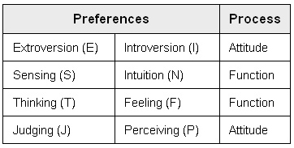

|
The Psychological Type Indicator (PTI)
One of the earliest known theories of human typology is from the Greek philosopher Hippocrates who proposed four fundamental types of sanguine (happy), choleric (irritable), melancholic (sad), and phlegmatic (calm). Many other personality characteristics or behaviors have been further drawn out from these four temperaments, although the premise of the four temperaments has been relatively enduring through the ages. Carl Jung, an early student of Sigmund Freud, was perhaps the greatest proponent of typological personality theory, and classified personality into eight types. Numerous other type theories have been proposed but none has been so successfully applied and scientifically accepted as Jungian type theory.  Each of the four preferences is symbolized by its first letter (except for iNtuition, which is symbolized by the letter “N” to avoid confusing it with Introversion). The combination of the four preferences gives a possible 16 combinations of personality type, e.g., ESTP, INFJ, ENFP, etc. The Psychological Type Indicator (PTI) is an assessment of Jungian Type that has been designed to help individuals find the type that most closely matches their preferences. The report provides summary feedback based on the results of your PTI:
|